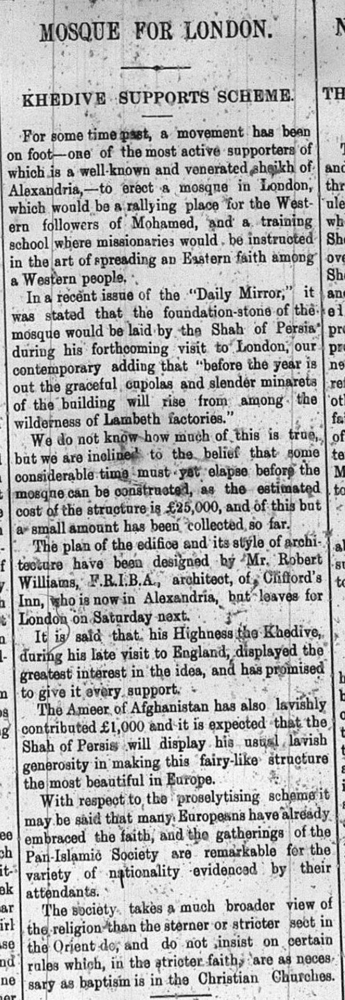

The More Things Change
The more they stay the same
There is nothing new about racism or xenophobia, and it should be unsurprising, even expected, to find examples of orientalism in an imperial newspaper aimed at colonial agents. What is surprising, and as an immigrant, more than a little upsetting, was reading a quoted article from “Home Counties Magasine” bemoaning the supposed death of the neighborhood of Whitechapel in East-end. The language used is frightfully familiar. “Extreme poverty is perhaps the most striking characteristic of this community…” The unnamed writer goes on to describe just how “the typical alien in his English career” establishes himself. He finds a cheap room where he sleeps with his entire family and where he “plies his trade.” Expanding his business he recruits fellow immigrants, and they “dexterously avoid the eye of the law.” Ultimately, this faceless alien creates and propagates a nasty system of poverty, crime, and misery.
This viciously dehumanizing view of immigrants stands in bewildering contrast to other articles the Egyptian Gazette publishes observing native Egyptians daily. There is almost a respect given to some members of the Muslim community and the next day there is an article welcoming the construction of a Mosque in London!

It seems that Great Britain had a history of Anti-Semitism in this era that also saw the Dreyfus affair and the proliferation of biological racism that further dehumanized non-white groups. Oscar Slater, for example, was a British Jew living in Glasgow in 1908, and like Dreyfus was wrongfully convicted of a crime he did not commit, in this case the murder of a white British woman. I can only hazard a guess as to why such a heinously racist view of Jewish immigrants in Whitechapel can coexist with the apparent celebration of Muslim culture. The closest I can understand is the idea of “defensive imperialism” Historian Eric Adler in an article in the International Journal of the Classical Tradition posits that Late-Victorian/Edwardian imperialists sought to define the British empire in terms with which they could compare it to the Roman empire. Unlike the Romans, Adler posits that a popular refrain of British imperialism was that they effectively sought to “protect” themselves by expanding. As subjects of British rule, Muslim Egyptians are thus “ok” so long as they stay in their separate sphere, since they are not “intruding” into British space, unlike the Eastern European Jews that are immigrating to Whitechapel. The whole point of empire, other than enrichment, is to protect the colonial nation from the subjects of other empires when they “invade” (I cannot stress the quotation marks there enough) home. The new Eastern European Jewish community therefore turns the idea of Empire on its head.